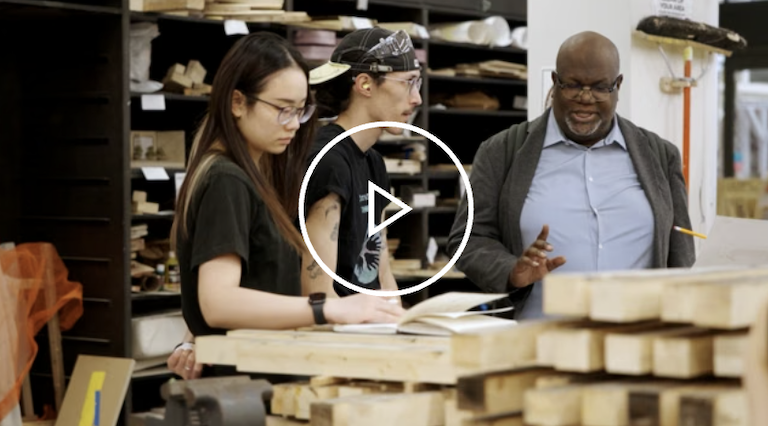

About
Academics
Research
Campus
You learn how to use your creative skills in a techincal way.Here, you learn, create, and explore innovative ideas and paths toward a new future for all. Here, you learn, create, and explore innovative ideas and paths toward a new future for. Here, you learn, create, and explore innovative ideas and paths toward a new future for.
Since the 2021 outbreak of war in Ukraine, Jessica Pisano has been chronicling the ways Ukrainian democracy has survived under Russian siege, employing the research practices she teaches her students to use. Since the 2021 outbreak of war in Ukraine, Jessica Pisano has been chronicling the ways Ukrainian democracy has survived under Russian siege, employing the research practices she teaches her students to use. Since the 2021 outbreak of war in Ukraine, Jessica Pisano has been chronicling the ways Ukrainian democracy has survived under Russian siege, employing the research practices she teaches her students to use. Since the 2021 outbreak of war in Ukraine, Jessica Pisano has been chronicling the ways Ukrainian democracy has survived under Russian siege, employing the research practices she teaches her students to use

Parsons' tradition of hands-on learning and community engagement is giving new designers a way to make a difference in the world through regenerative design while connecting them with government and industry innovators. Parsons' tradition of hands-on learning and community engagement is giving new designers a way to make a difference in the world through regenerative design while connecting them with government and industry innovators. Parsons' tradition of hands-on learning and community engagement is giving new designers a way to make a difference in the world through regenerative design while connecting them with government and industry innovators
Vibraphonist, alum, and educator Joel Ross reflects on the energy, mentorship, and creative community that shaped his path at the university's School of Jazz and Contemporary Music. Vibraphonist, alum, and educator Joel Ross reflects on the energy, mentorship, and creative community that shaped his path at the university's School of Jazz and Contemporary Music. Vibraphonist, alum, and educator Joel Ross reflects on the energy, mentorship, and creative community that shaped his path at the university's School of Jazz and Contemporary Music